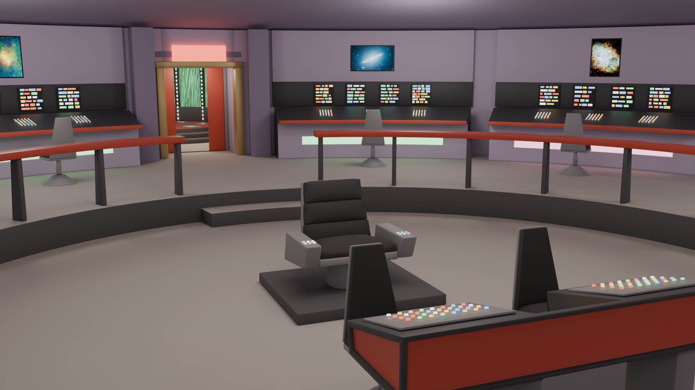
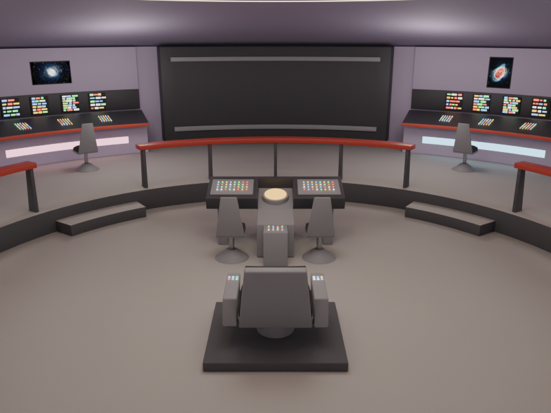
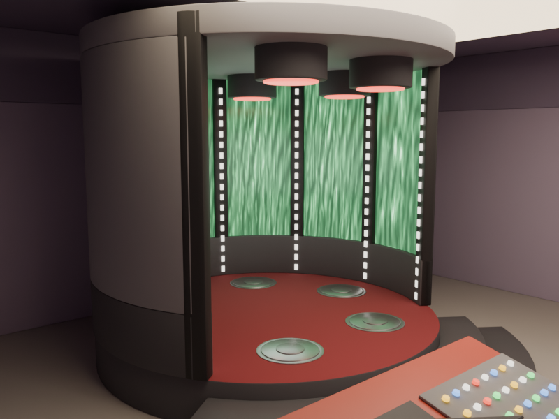
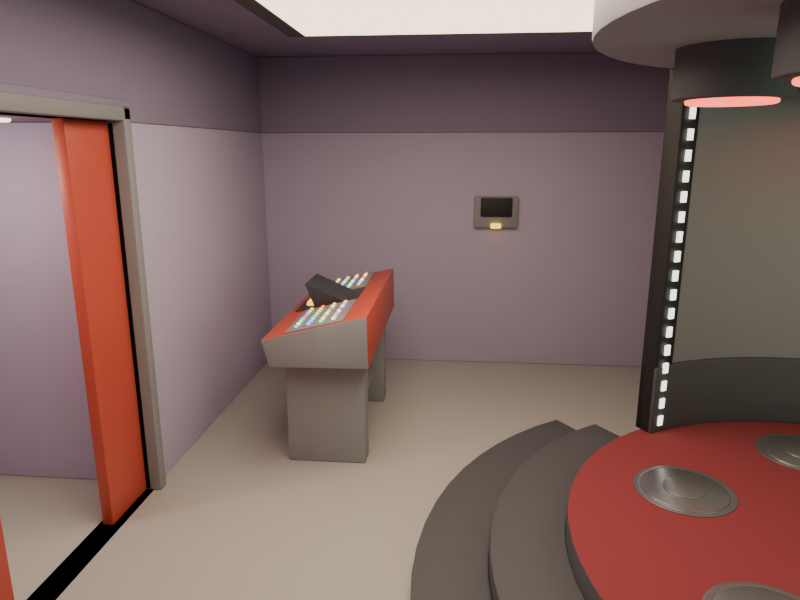

USS Enterprise (NCC-1701)
2026

A VRChat world built for the 60th anniversary of Star Trek: The Original Series, recreating the sets that started it all: a 20 metre command bridge, a transporter room, and the corridor that links them. Visitors arrive on the transporter pads rather than in an empty lobby, so the world opens with the one moment everyone remembers from the show, then walk the corridor to the bridge to take the captain's chair or a station of their own.
The sets were rebuilt in Blender with Claude and the Blender MCP, working from a blockout of each room and then filling it with parametric pieces: the ring of perimeter consoles, the helm and navigation desks with their astrogator, the swivel chairs, the railings, and the six transporter pads. Everything is driven by a shared palette of lavender walls, red trim, and gold accents, which keeps the retro look consistent across roughly four hundred separate objects.
Almost nothing in the world uses an image texture. Of thirty materials, twenty-eight are flat colour and emission: the button banks, the glowing wall strips, the moiré curtain behind the transporter alcove, and the red alert lens are all geometry and shading rather than painted maps. Only the wall screens carry bitmaps, and those hold ten public-domain NASA photographs of nebulae, galaxies and spacecraft, packed into two 1024 × 1024 atlases with a JSON region map so that ten distinct screens cost two textures. The whole world comes to about 225,000 triangles, light enough to stay comfortable on Quest.


